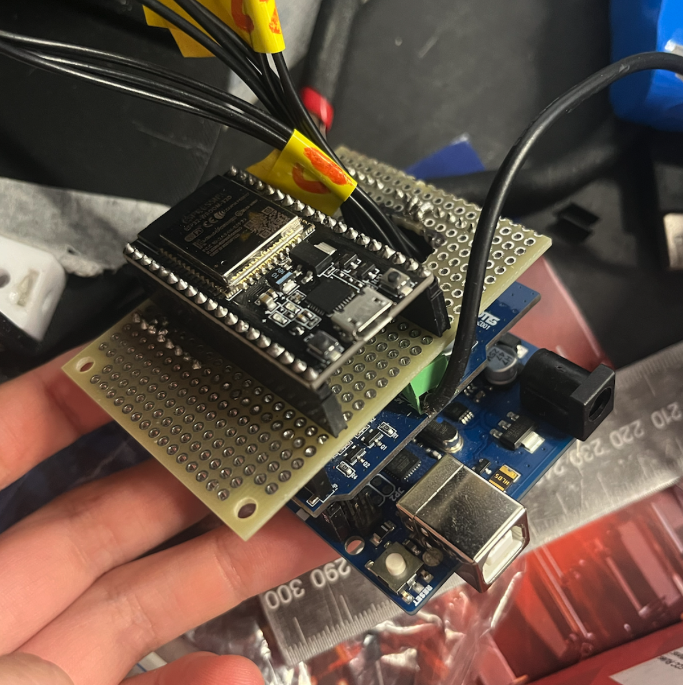
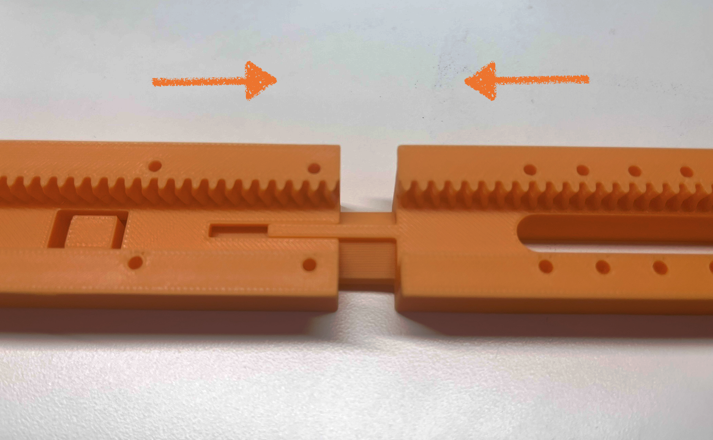
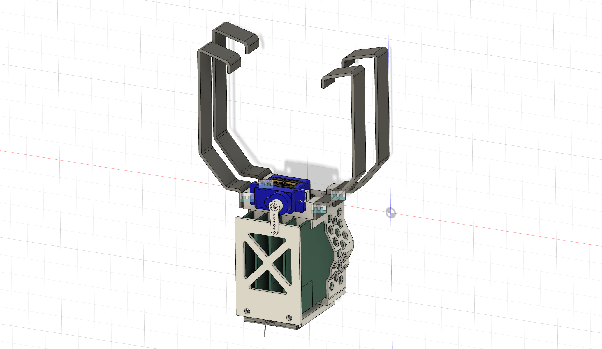
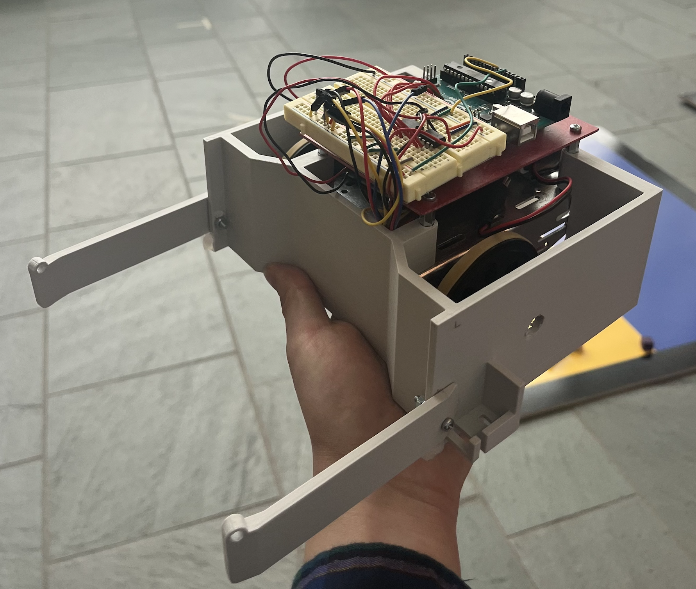
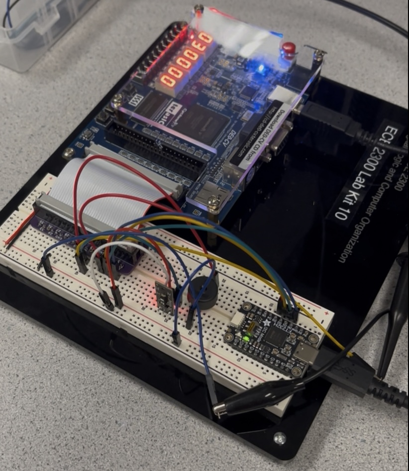
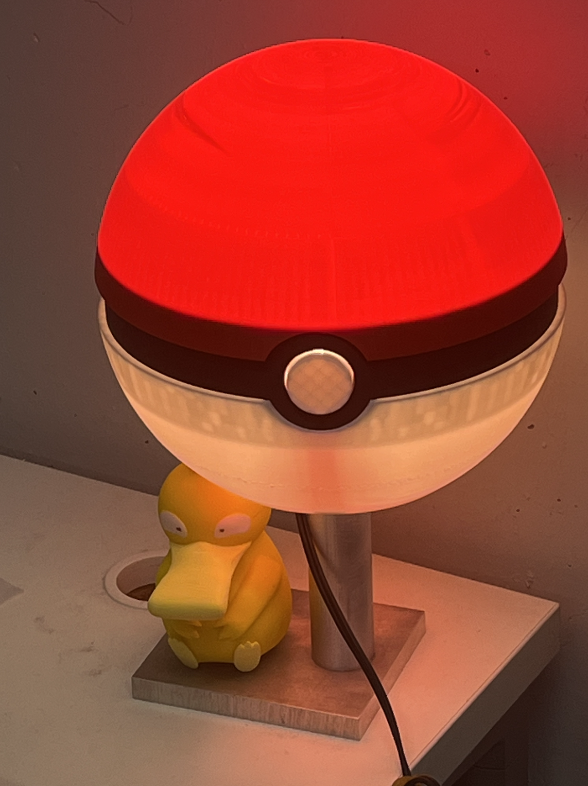
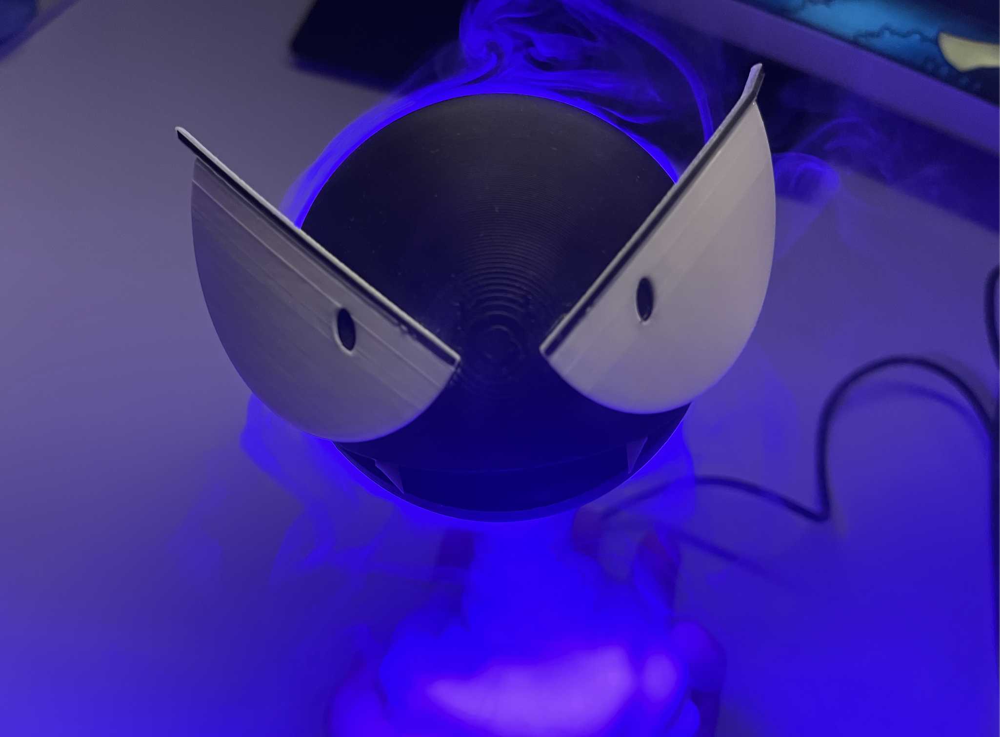

About This Character
Xinrong is an Electrical and Computer Engineering student at Cornell University with a minor in Robotics. She has a passion for robotics, embedded systems, CAD design, and loves creating physical projects that combine these interests.
Project Team/Research

Baby Yoda Electrical System
Enhanced Baby Yoda robot electrical system with ESP32, Arduino, and Dynamixel actuators with a custom perfboard and regulated power system.
▶ Click for more details

AgXRP z-section connection
Designed and 3D-printed a custom connection clip for the AgXRP robot with proper compliance and tolerance for ease of printing and assembly.
▶ Click for more details

Chip Sat Deployer
Co-designed and built a 3D-printed deployer for a chip satellite, tested by mounting to an RC aircraft. Uses a servo motor and rubber band release mechanism.
▶ Click for more details
Coursework

Cube Collecting Robot
Designed and built a fully autonomous robot for a head-to-head competition where the goal was to collect more cubes than an opposing robot within 60 seconds.
▶ Click for more details

FPGA Door Monitor
Verilog FPGA system with 50+ hardware modules interfacing a LiDAR sensor to detect motion, drive a buzzer, and count detections. Built for ECE2300 at Cornell.
▶ Click for more details
Personal Projects

Pokeball Lamp
A Poké Ball lamp with a machined aluminum stand (lathe & mill) and a custom 3D-printed shade that toggles on/off via the Poké Ball button.
▶ Click for more details

Gastly Humidifier
A 3D-printed Gastly humidifier with independent button controls for lighting and mist, on a custom sculpted stand made in Blender.
▶ Click for more details